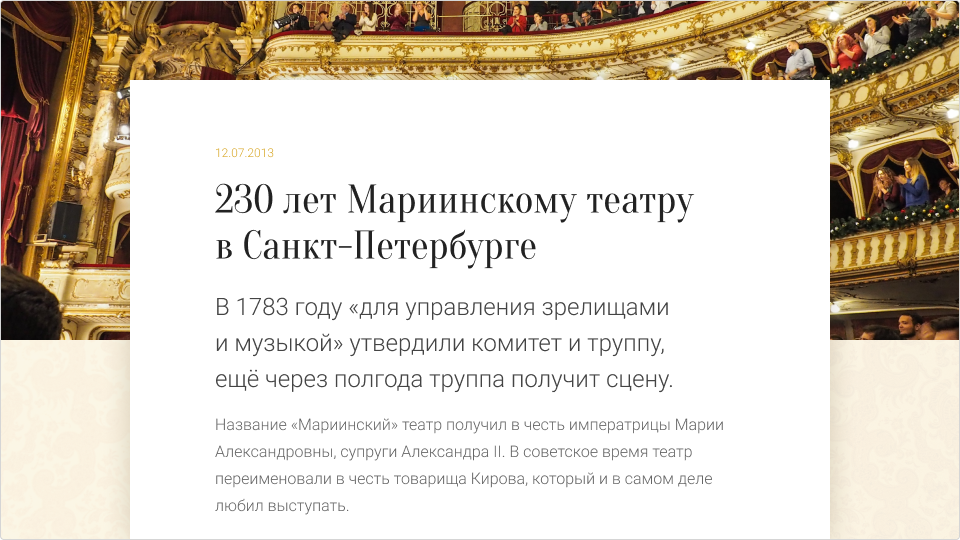
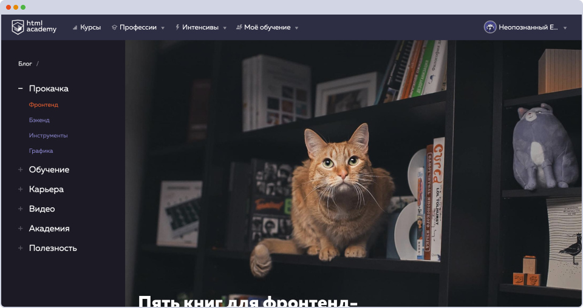

Как мы помним, заголовок первого уровня <h1>
на странице только один, и он обязательно должен быть
в наличии. Давайте разберёмся, какие заголовки появляются
в новостных материалах и как их верстать.
Важный
вопрос, который должен был учесть дизайнер при создании макета: какой
размер заголовков предполагается на сайте? И заголовки каких
уровней появятся в самом тексте новости и зачем? Ведь
от этого зависит, сколько строк может максимально занимать
заголовок наверху, а внутритекстовые заголовки должны
соответствовать своему назначению.
Про семантическую вёрстку мы выпустили навык «Создание семантической разметки по макету». Но если коротко, то заголовки нельзя использовать не по порядку, заголовки <h3> членят на более мелкие разделы текст, озаглавленный <h2>,
так, чтобы получалось правильное дерево — от крупных
к мелким. Принято, чтобы размер шрифта (кегль) у каждого
следующего заголовка уменьшался от <h1> к <h6>.
<h1>Навык «Вёрстка текстового содержания страниц»</h1><h2>Заголовки</h2><h3>Шрифты для заголовков</h3><h4>Подключение шрифтов</h4><h5>Подключение локальных шрифтов</h5><h5>Подключение шрифтов с Google Fonts</h5><h3>Типографика заголовков</h3><h2>Лиды</h2>
…
В общем дерево заголовков должно составить смысловую
структуру документа, своего рода оглавление материала. Ридеры и
некоторые другие инструменты выводят эту структуру в качестве навигации.
Также корректное использование заголовков — это один из признаков
валидности вёрстки.
Кроме всего прочего, в любых режимах, которые
отменяют основной дизайн сайта, «версия для чтения» (она же версия без
стилей) оформляется в зависимости от семантической вёрстки, то есть
заголовки будут размечены в зависимости от их уровня.
Заголовки уровнем ниже четвёртого уровня встречаются редко, и вероятно, дизайнер не спроектирует их в макете.
Если
заголовки будут, например, как «Основы HTML и CSS», они точно
поместятся в одну строку на любом экране, а заголовок в духе «Основы
HTML и CSS. Страх, безнадёжность и проблески здравого смысла в джунглях
интернета» вряд ли поместится без переносов даже на десктопе, хотя в нём
всего 88 знаков включая пробелы. Так или иначе, заголовки длиной больше
100 знаков считаются слишком крупными для веба. Хороший тон — не
выходить за 60 знаков.
Также считается правильным выделять
заголовки достаточно конкретно: заголовок должен контрастировать с
основным текстом. Каждый заголовок любого уровня должен быть связан с
тем текстом, который он озаглавливает, то есть отступ внизу не должен
быть слишком велик. А вот отступ над заголовком стоит увеличить, чтобы
отделить смысловые блоки текста и визуально подчеркнуть, что начался
следующий участок.
Типичный заголовок: укрупнённый шрифт, другой цвет
<articleclass="article"><h1class="article-heading">
Очень длинный, очень содержательный и непростой заголовок с тяжёлой судьбой
</h1><p>
Предваряет такую же длинную, содержательную, глубокомысленную статью.
</p></article>
Обычно у заголовков просто укрупнённый кегль
относительно основного текста, возможно — увеличенная насыщенность. Но
бывают и другие ситуации.
Заголовок
слишком велик для такого дизайна. К тому же если не учесть эту
особенность, в мобильной версии он может вообще не влезть на один экран
Особенный
шрифт, обводка, фон, выравнивание — это случается не очень часто,
потому что обычно текст и заголовок воплощаются как единая композиция, и
это правильно: они не должны казаться разными объектами, должны быть
близко друг к другу, заголовок должен напрямую относиться к тексту.
Каждое дизайнерское решение должно быть оправдано тематикой и задачами
сайта, и сайтов, у которых заголовок мог бы получить отдельный блок, не
так много.
Однако бывают ситуации, в которых заголовок, лид или
подзаголовок и дополнительная информация могут объединяться в отдельную
группу, тогда было бы неплохо обернуть их в тег <header>.
Дата, заголовок и лид могут выступить как семантическая группа
<articleclass="news"><imgclass="news-picture"src="/img/mariinsky-pic.jpg"alt="Мариинский театр, ярусы, овации"><divclass="news-content"><headerclass="news-header"><timedatetime="2013-07-12"class="news-date">12.07.2013</time><h1class="news-heading">
230 лет Мариинскому театру в Санкт‑Петербурге
</h1><pclass="news-leading-paragraph">
В 1783 году «для управления зрелищами и музыкой» утвердили комитет и труппу, ещё через полгода труппа получит сцену.
</p></header><p>
Название «Мариинский» театр получил в честь императрицы Марии Александровны, супруги Александра II. В советское время театр переименовали в честь товарища Кирова, который и в самом деле любил выступать.
</p></div></article>
Подзаголовки в вебе — скорее
редкость. Между печатными и интернет-изданиями лежит пропасть,
и никогда не следует делать сайт «как глянцевый журнал»:
у них разные принципы вёрстки, разные условия чтения.
В журнальной вёрстке можно каждый отдельный материал верстать
по-другому, а на сайте у всех материалов обычно единый
стиль. Подзаголовки в норме верстаются параграфами (<p>) и стилизуется по классу, чтобы не нарушать семантику тегов и иерархию заголовков.
Категорически не приветствуется оформление подзаголовков тегом заголовка следующего уровня, то есть группы <h1> + <h2> в современной вёрстке материалов — это моветон, а заголовочные группы <hgroup> вовсе не поддерживаются.
<!-- Антипример, притом встречающийся в устаревших спецификациях --><hgroup><h2>У тебя на голове</h2><h3>Как выбрать идеальные наушники</h3></hgroup>
В зависимости от назначения и архитектуры страницы подзаголовок может быть размечен как <p>, и они с заголовком могут быть объединены как <header>.
<article><header><h1>Смотри, это ты</h1><pclass="header-description">Научиться позировать как будто живой</p><timedatetime="2020-01-20"class="news-date">Опубликовано 20 января 2020</time></header><pclass="leading-paragraph">Закончились новогодние праздники, и хочется новые фотосессии, и получаться на фотографиях лучше, чем в прошлом году. Как позировать так, чтобы ваши достоинства были ярче, а недостатков было не заметно?</p></article>
Котик
милый, но по идее речь в материале не о нём,
а о книгах для фронтенд-разработчиков, и пользователю
должно быть понятно, о чём страница
Скриншот
сделан на «подправленной» странице нашего блога. Браузер был
развёрнут во весь экран ноутбука. Фон заголовка на этом
примере хорошо контрастирует с текстом, это связано с удачной
картинкой. Подзаголовок не поместился, и пользователь должен
догадываться, что ниже расположен текст. На мобильном устройстве
такой хедер займёт скорее всего больше экрана. Кроме того, графические
фоны для текстов сложно подбирать, чтобы сохранить читаемость,
и ещё сложнее сделать естественными и уместными.